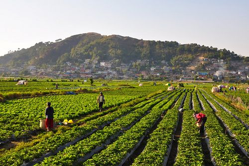
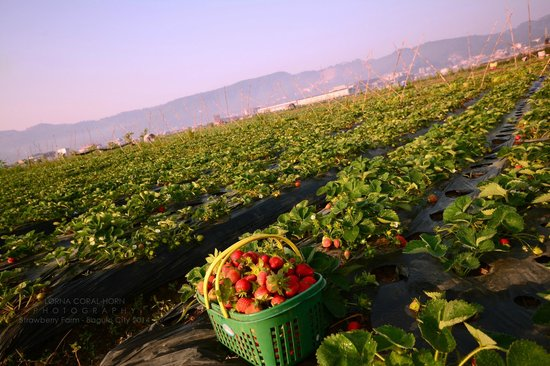
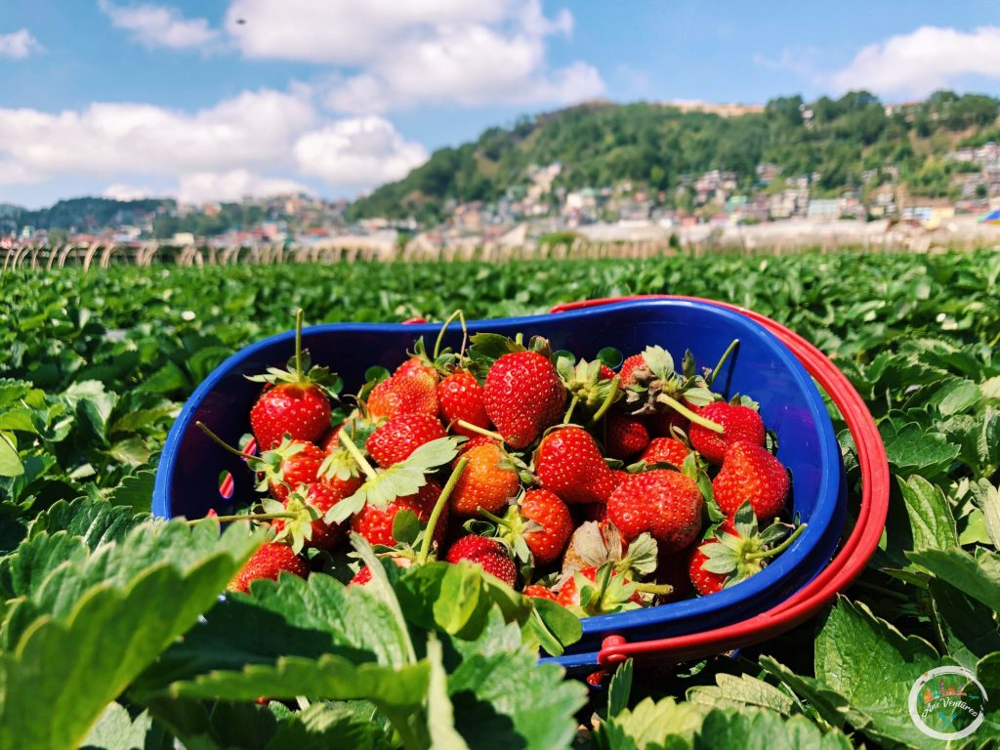

Fresh strawberries and beautiful farms in Benguet.



The La Trinidad Strawberry Farm is a well-known agricultural attraction in Benguet, where visitors can experience strawberry picking during harvest season and enjoy freshly made strawberry delicacies. Surrounded by beautiful fields and cool highland weather, it offers a unique countryside experience that showcases the region’s rich farming culture and natural charm.